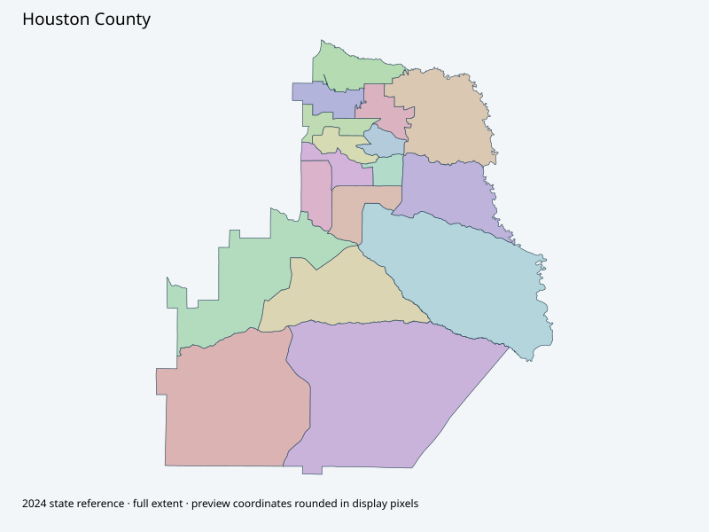

Map index · 17 explicit-FIPS 2024 map rows; 17 historical result identities. No approved crosswalk.

Full native coordinate/attribute extraction (gzip JSON) · Original complete statewide ZIP
Official polling-locations page contains names/addresses and adopted polling-location-change references, not downloaded countywide polygon geometry. State2024 full geometry retained; polling sites do not replace precinct boundaries.
Full objects, county source IDs/clocks and attributes: all 2,701 native contexts. isVirtual:false and source label precinct do not prove physical geometry.
| Source name | Full source GUID | Breakdown ordinal | Source | Map status |
|---|---|---|---|---|
| ANNX | 01000000-d884-2e72-8a5c-08dcda4bcb49 | 0 | 2024NovGen--houston-county-ga | unreviewed / no approved map join |
| BMS | 01000000-d884-2e72-6217-08dcda4bcb55 | 1 | 2024NovGen--houston-county-ga | unreviewed / no approved map join |
| CENT | 01000000-d884-2e72-7c75-08dcda4bcb61 | 2 | 2024NovGen--houston-county-ga | unreviewed / no approved map join |
| CGTC | 01000000-d884-2e72-574d-08dcda4bcb6f | 3 | 2024NovGen--houston-county-ga | unreviewed / no approved map join |
| FMMS | 01000000-d884-2e72-43ca-08dcda4bcb7e | 4 | 2024NovGen--houston-county-ga | unreviewed / no approved map join |
| HAFS | 01000000-d884-2e72-947f-08dcda4bcb8a | 5 | 2024NovGen--houston-county-ga | unreviewed / no approved map join |
| HEFS | 01000000-d884-2e72-149c-08dcda4bcb96 | 6 | 2024NovGen--houston-county-ga | unreviewed / no approved map join |
| HHPC | 01000000-d884-2e72-cc1d-08dcda4bcba1 | 7 | 2024NovGen--houston-county-ga | unreviewed / no approved map join |
| MCMS | 01000000-d884-2e72-a5bc-08dcda4bcbb0 | 8 | 2024NovGen--houston-county-ga | unreviewed / no approved map join |
| NHSC | 01000000-d884-2e72-ff6e-08dcda4bcbbc | 9 | 2024NovGen--houston-county-ga | unreviewed / no approved map join |
| PEC | 01000000-d884-2e72-a6e4-08dcda4bcbc9 | 10 | 2024NovGen--houston-county-ga | unreviewed / no approved map join |
| ROZR | 01000000-d884-2e72-c99d-08dcda4bcbd5 | 11 | 2024NovGen--houston-county-ga | unreviewed / no approved map join |
| TMS | 01000000-d884-2e72-163f-08dcda4bcbe1 | 12 | 2024NovGen--houston-county-ga | unreviewed / no approved map join |
| TWPK | 01000000-d884-2e72-9e08-08dcda4bcbec | 13 | 2024NovGen--houston-county-ga | unreviewed / no approved map join |
| VFW | 01000000-d884-2e72-40b3-08dcda4bcbf8 | 14 | 2024NovGen--houston-county-ga | unreviewed / no approved map join |
| VHS | 01000000-d884-2e72-04ce-08dcda4bcc04 | 15 | 2024NovGen--houston-county-ga | unreviewed / no approved map join |
| Wellston Center | 01000000-d884-2e72-b780-08dcda4bcc11 | 16 | 2024NovGen--houston-county-ga | unreviewed / no approved map join |
| Original row ordinal | DISTRICT | PRECINCT_I | PRECINCT_N |
|---|---|---|---|
| 1617 | 153HEFS | HEFS | HEFS |
| 1619 | 153PEC | PEC | PEC |
| 1620 | 153HAFS | HAFS | HAFS |
| 1621 | 153ROZR | ROZR | ROZR |
| 1625 | 153VHS | VHS | VHS |
| 1666 | 153MCMS | MCMS | MCMS |
| 1667 | 153TMS | TMS | TMS |
| 1668 | 153CENT | CENT | CENT |
| 1669 | 153CGTC | CGTC | CGTC |
| 1670 | 153TWPK | TWPK | TWPK |
| 1671 | 153FMMS | FMMS | FMMS |
| 1672 | 153ANNX | ANNX | ANNX |
| 1673 | 153VFW | VFW | VFW |
| 1674 | 153HHPC | HHPC | HHPC |
| 1678 | 153NHSC | NHSC | NORTH HOUSTON SPORT COMPLEX |
| 1707 | 153BMS | BMS | BMS |
| 1708 | 153WELL | WELL | WELLSTON CENTER |